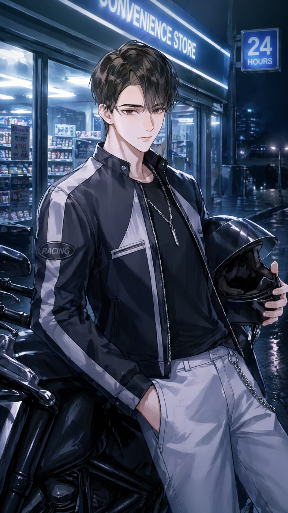
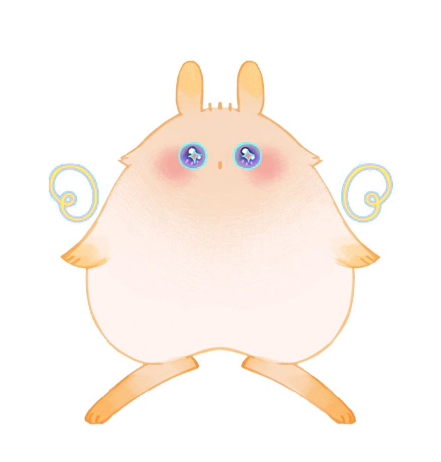
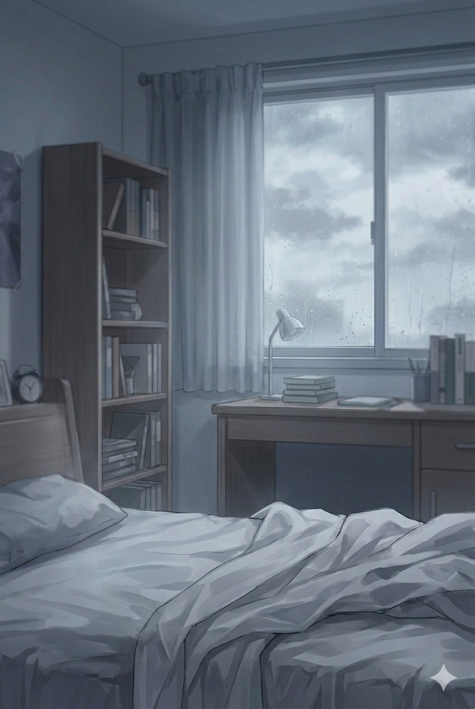

距离18岁的夏天已经9年了，你仍时常梦到毕业典礼那场爆炸。最亲的老师同学都不幸在事故中殒命，而你长期昏迷后失去了全部高中记忆，还因心理创伤没能上大学，最近求职处处碰壁，被家人催促相亲……
如果时光倒流，你能阻止那场意外发生，人生会不会顺利一点？

“我听到了你的愿望！”
时间突然停止流逝，一个浑圆的“生物”凭空蹦了出来。
“我是伟大的时间DOLO，可以送你回到过去。和我签订契约，改变命运吧！”


你不急着为一段关系写下结局。你把判断留在自己手中，也把真正重要的话，留给那些不被催促的时刻。雾还未散，但你已经在按自己的节奏确认方向。
不急着写下结局，也不轻易放弃
慎重落笔，也保留自己的判断
不被催促时，才愿意照亮心里的话